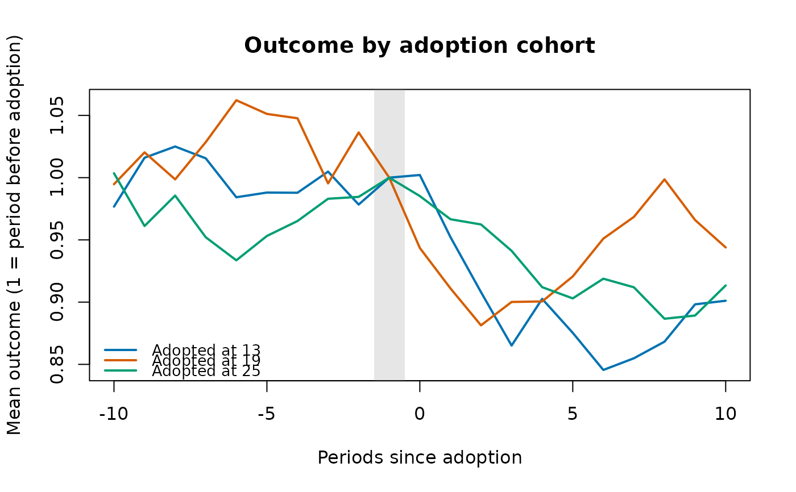

The mean outcome of each adoption cohort by time since adoption, smoothed by a moving average and scaled to 1 in the period before adoption: a check, before any model, that the cohorts moved together before the policy.
Usage
cohtrnd(data, unit, time, y, ftreat, win = c(-12, 12), ma = 3L, norm = TRUE)Arguments
- data
A data frame, one row per unit and period.
- unit, time, y
Column names: the unit, the period (numeric, for example a year or a month index) and the outcome.
- ftreat
Column name of the period a unit is first treated (
NA, 0 orInffor a unit never treated). Treatment is taken as staying on.- win
Periods before and after adoption to show (default -12 to 12).
- ma
Width of the trailing moving average (default 3; 1 for none).
- norm
Scale each cohort to 1 at period -1 (default
TRUE).
Value
A data frame of class rmbl_cohort_trends: cohort,
evtm, value. plot() draws one line per cohort, with
the period before adoption marked.
Examples
p <- polex()
ct <- cohtrnd(p, "district", "month", "crmrate", "refmonth",
win = c(-10, 10))
plot(ct)

# your own panel: eight towns over ten years, four adopting a by-law (two
# in 2019, two in 2021), with each town's population, county and income
own <- data.frame(
town = rep(c("A", "B", "C", "D", "E", "F", "G", "H"), each = 10),
year = rep(2015:2024, times = 8)
)
i <- match(own$town, unique(own$town))
own$first <- c(2019, 2019, 2021, 2021, NA, NA, NA, NA)[i]
own$bylaw <- as.integer(!is.na(own$first) & own$year >= own$first)
own$pop <- c(12, 30, 8, 22, 15, 40, 9, 18)[i] * 1000
own$county <- rep(c("North", "South"), 4)[i]
own$income <- 50 + own$year - 2015 + cos(seq_len(80))
own$rate <- 30 + i + 0.5 * (own$year - 2015) - 4 * own$bylaw +
0.2 * own$income + sin(seq_len(80))
cohtrnd(own, "town", "year", "rate", "first", win = c(-3, 3), ma = 1)
#> ╭── Outcome trends by adoption cohort ──────────────────────────────────╮
#> │ Cohorts 2 │
#> │ Periods since adoption -3 to 3 │
#> │ Moving average 1 period(s) │
#> │ Scale relative to period -1 (= 1) │
#> │ │
#> │ evtm cohort 2019 cohort 2021 │
#> │ ---- ----------- ----------- │
#> │ -3 0.9717 0.9666 │
#> │ -2 0.9887 0.9806 │
#> │ -1 1.0000 1.0000 │
#> │ 0 0.9183 0.9354 │
#> │ 1 0.9325 0.9520 │
#> │ 2 0.9526 0.9630 │
#> │ 3 0.9749 0.9721 │
#> │ │
#> │ Each column is one cohort's average outcome around its own adoption │
#> │ date (evtm 0); cohorts that move together before 0 support a common │
#> │ trend. │
#> ╰───────────────────────────────────────────────────────────────────────╯